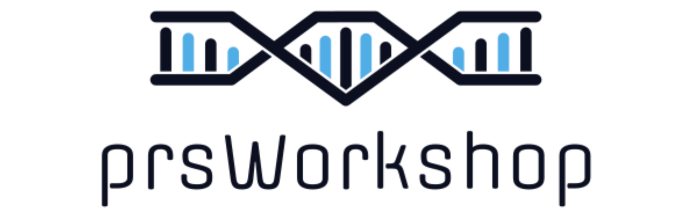

PRS Japan Workshop has finished (September 1st, 2024).
Please help us by clicking here to complete our anonymous post-workshop survey!
Workship lecture slides can be downloaded here!
For additional questions, don't hesitate to email the speakers:
1. Yuki Okada - Director [yuki-okada at m.u-tokyo.ac.jp]
2. Paul O'Reilly - Day 1&2 [paul.oreilly at mssm.edu]
3. Tade Souaiaia - Day 1 [tade.souaiaia at downstate.edu]
4. Clive Hoggart - Day 2 [clive.hoggart at mssm.edu]
Download workshop practical data!
Attendees should complete the pre-workshop checklist!
Download pre-workshop materials here.
Join the workshop google-group here.
This short workshop will equip scientists with the tools and approaches required to perform polygenic risk score (PRS) analyses. The workshop will include both applied and theoretical topics in PRS research, delivered across multiple lectures, seminars and computational practicals. In order that students are properly prepared for the workshop, then they must complete this "Pre-Workshop Guide" first, by going through each of the sections shown on the left of the screen, starting with 'Checklist'.